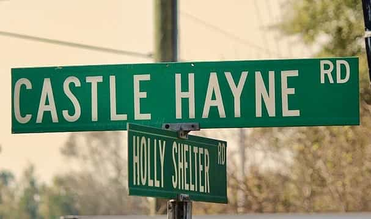

Farmer. Matriarch. Superhost. History buff. Cat herder.
I'm Jane Lewis, and I've worked in agriculture and education most of my life. I majored in history in college — always drawn to how places carry memory and meaning across generations. That sensibility is woven into everything we're building here.
I have a knack for communication, a love of the written word, and the kind of organized chaos that comes with managing an AirBnB (Superhost in one year!), a score of animals, and three teenage boys — all with the help of my dashingly handsome and endlessly hard-working husband, David Tucker Hill.
This farm is a legacy. Our goal isn't to industrialize it — it's to make it thrive in a way that honors the land, feeds our community, and creates experiences people remember for a lifetime.

We're not dreaming up an idea. We've lived on this land for over 20 years, and the people behind this plan have real credentials in organic farming, Agritourism, and operations.
Tucker has run the family enterprise and lived on this land for over two decades. He's the musical heartbeat of the operation — bandleader of The Clams (local rock) and The Possums (Grateful Dead/Americana), and a regular in Wilmington's jazz scene. He's organized events and festivals on this property for years. The cultural programming side of this farm is built on his foundation.
Jane's brother, and the person who runs the build-out. Marcus is an Army veteran with a background spanning software development, construction project management, and — critically — a 2016 residency at a working organic winery and Agritourism destination in California. That experience is the direct template for what we're building here. He brings a service-minded, get-it-done approach to every phase of the project.
Marcus's partner and our agricultural authority. Jessica is a certified organic inspector for CCOF — the nation's oldest and largest organic certifier — and studied graduate ecological horticulture at UC Santa Cruz. She provides the scientific rigor behind our crop selection, soil practices, and path to USDA organic certification.

Our farm sits in Castle Hayne, a small community in New Hanover County just north of Wilmington. The Northeast Cape Fear River runs along our property, giving us a rare combination of fertile bottom land, hardwood canopy, and wide-open sky that makes this place feel distinct from everything around it.
We're planting Loblolly Pine truffles, peaches, figs, and blueberries. Building barns, greenhouses, and event stages. Establishing a vineyard and a working nursery. Restoring an old Tobacco Barn into a guest house, and laying the groundwork for an RV campground along the river. Every structure is designed to feel intentional — connected to the heritage of Castle Hayne and built to last.
This land has a history longer than any of us. Castle Hayne — named after Roger Hayne, who received a land grant here in the early 1700s — has grown Dutch bulb flowers, tobacco, and some of the finest produce in the Cape Fear region for three centuries.
We see ourselves as stewards of that tradition. Not museum-keepers, but farmers who understand that the best thing you can do with good land is use it well, share it generously, and pass it on.

Reggiejr., our senior farm supervisor, has been on the payroll since well before the business plan existed. He has opinions about everything. We listen to about half of them.